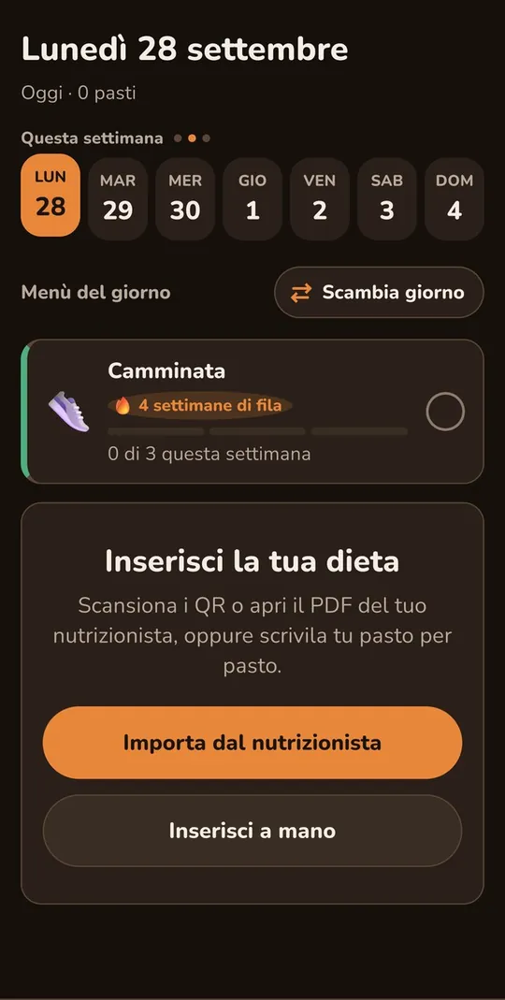
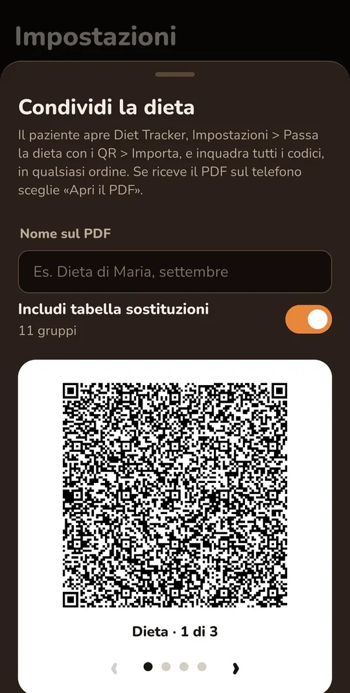

1 · Arriva la dieta
Tre strade per riempire l'app
Al primo avvio l'app è vuota: nessuna dieta preinstallata. Scegli tu come riempirla.
- A mano, copiando il foglio del nutrizionista: alimenti, grammature, nomi dei piatti.
- Con i QR o con il PDF ricevuto: si inquadrano i codici in qualsiasi ordine, oppure si apre il PDF e non serve la fotocamera.
- La dieta importata si apre come bozza e diventa attiva solo dopo la conferma.
Per il professionista. Chi prepara le diete può usare il costruttore della dieta, un file HTML che si apre nel browser anche senza internet: si compone il piano e si scarica il PDF con i QR. Nessun dato viene inviato a nessuno.

